产品操作手册
OCS介绍
功能介绍
- OCS跨平台：支持多前端、多仓储与ERP等多种平台
- OCS集成多种销售前端,共企业选择,帮助企业拓展更多的销售渠道(淘宝商城、QQ商城、ecstore、分销王)；集成多家第三方物流服务商,为企业提供一站式解决方案（酷武、科捷、百事）；集成多家独立仓储系统,并提供标准接口,方便企业完成自建仓储的对接（富勒、GILLION、曼哈顿）；集成多种ERP系统（用友、金蝶）
- OCS多渠道：支持经销、代销等多种渠道统一管理
- OCS运营协作：可视化界面—统一管理订单、商品和库存
操作流程总览
系统设置
基本设置
系统设置
依次点击“系统工具—基本设置—系统设置”，如下图所示：
鼠标移动到该图标上方，会出现相应的解释说明。
- 仓库设置
- 根据实际情况，选择是多仓库还是单仓库。但是当系统中的仓库数量大于一个时，不可切换为单仓库。
- 订单失效时间设置
- 订单失效时间是针对未支付的非货到付款订单的一个属性，从订单的下单时间开始计算，超过设置时间后订单将被自动取消。
- API同步日志备份周期
- 与各个前端系统通信的记录称为API同步日志。周期设置天数以上的同步日志将被清除，在系统中将无法查询。
- 订单未确认的时间设置
- 从订单的下单时间开始计算，设置时间过后仍未被确认的订单系统将会加粗显示，提示操作员优先处理。
支付方式配置
系统本身不存在支付方式，将各个前端店铺使用的支付进行汇总，并与店铺进行关联，供查询。通过系统对前端发起支付和退款请求时，必须使用这个前端店铺支持的支付方式。
依次点击“系统工具—基本设置—支付方式配置”，可以点击“同步支付方式”，将系统现有的支付方式信息进行更新，如下图所示：
前端店铺管理
OCS是帮助卖家管理订单和建设组织架构的业务处理平台，针对多销售前端的电子商务企业，前端店铺的管理是不可或缺的部分。依次点击“系统工具—基本设置—前端店铺管理”，如下图所示：
- 添加/编辑店铺
- 点击“添加店铺/编辑”，进入前端店铺的信息页面，如下图所示：
- 店铺编码是前端店铺在系统中的唯一标识，填写后不可更改。
- 名称为前端网店在系统中需要显示的中文名，也是快递单上可打印的店铺名称。
- 地区、地址、邮编、发件人、联系电话等信息是用来打印在快递单中发货信息部分。
- 网店地址就是店铺的链接地址。
- 点击查看列的箭头可以展开看到店铺的详情
- 点击“添加店铺/编辑”，进入前端店铺的信息页面，如下图所示：
- 删除店铺
- 选中要删除的店铺，点击“删除”按钮进行删除。只能删除没有绑定关系的店铺，如果要删除已绑定的店铺，需要先解除绑定。
- 绑定店铺
- 添加店铺, 只是将店铺的相关信息录入到系统中,并没有与前端店铺实际建立关系.通过绑定来完成这一步骤.
- 新添加的店铺操作列中的内容是这样的:
- ShopEx体系前端系统
- 淘宝店铺
- 淘宝店铺

- 网站证书可以在前端店铺的后台进行查询。
- 申请绑定后需登陆前端店铺的后台同意OCS的绑定申请，同时还要向OCS发起绑定申请。双向绑定成功后，才算绑定完成。
- 淘宝店铺
- 拍拍店铺
- 拍拍API权限申请流程：登录http://fuwu.paipai.com，在打开的页面中，点击“申请成为拍拍服务商按钮”，如下图所示：

- 在打开的登录页面中，请使用您登录QQ帐号进行登录，如下图所示。
- 如果你不是“拍拍合作伙伴”，请先注册成为“拍拍合作伙伴”。请在打开的页面中填写你的合伙伴信息，如下图所示：
- 注册成功后进入“服务商平台”首页，请点击“创建应用”按钮进行应用创建，如下图所示。
- 在打开的“创建新应用”页面，填写你的应用信息，并提交。
- 应用创建成功后，在打开的应用创建成功页面，会显示你应用的API鉴权信息，如下图所示。
- 你也可以打开应用列表页面，查看你创建的所有应用。点击“查看”按钮，即可查看对应应用的详情，包扣API鉴权信息。如下图所示：
- 应用的详情页面，如下图所示：
- 绑定拍拍：
- Spid，Seckey，Token（Ptoken）可以登陆http:// fuwu.paipai.com/，在我的工作台中查询。绑定成功后，操作列中的内容变为：
- 此时，系统将会收订该店铺的订单，回写对应商品的库存
- 拍拍API权限申请流程：登录http://fuwu.paipai.com，在打开的页面中，点击“申请成为拍拍服务商按钮”，如下图所示：
- 查看绑定信息
- 点击“查看绑定关系”，可以查看系统当前所有的绑定关系信息，如下图所示：
- 被申请的绑定信息需要在这里进行确认。
- 点击“解除绑定”，输入解绑原因，提交后可以解除与某前端店铺的关联关系。
- 点击“查看绑定关系”，可以查看系统当前所有的绑定关系信息，如下图所示：
- 手工下载订单
- 手工下载订单
- 选定日期范围，点击“手工下载订单”可以下载时间段内前端店铺的订单。订单不会被重复下载。
- 在遇到诸如初次绑定OCS时，前端店铺中还有一些未处理的订单，或者暂时解除绑定前端店铺等情况下，可以使用这个功能下载订单。
- 手工下载订单
- 关闭库存回写
- 关闭库存回写
- 在默认的情况下，系统会将商品的可下单库存值（库存减去冻结库存）回写到各个前端店铺，更改前端店铺该商品的库存值。如果都某些店铺有特殊的要求，不需要使用系统统一的可下单库存值的话，可以在“前端回写设置”中关闭对该店铺的库存回写。
- 关闭库存回写
订单异常类型
在处理订单的过程，会遇到一些突发情况，需要进行线下的沟通或者等待客户答复等，此时，为了避免订单被误操作，可以将订单置为异常。异常的订单在正常处理订单的操作界面都不可见。在将订单置为异常的时候，需要选择异常的类型，异常类型就是对订单异常原因的描述，如：等待退款，等待补货等。
依次点击“系统工具—基本设置—订单异常类型”，如下图所示
点击“添加”按钮来增加订单异常类型。通过“编辑”按钮可以对已经添加的异常类型进行编辑，如下图所示：
这样，在将订单置为异常时，就可以快速选择异常类型了。
售后问题类型设置
在商品出售以后，客户由于不同需求会发起退换货请求，为了方便客服处理售后请求，设置了售后问题类型，就是对售后原因的解释，如留言与尺码不符、订单缺货、货品质量等。
依次点击“系统—基本设置—售后问题类型设置”，如下图所示：
点击“添加分类”设置售后问题类型名称及排序，通过排序可以优先选择某个售后类型，数字越小越靠前
点击“全部展开”或“全部收起”，可以展开或收起所有售后问题类型明细。
第三方仓库管理
系统可与第三方仓库连接，为了更好的完成接口之间的连接。首先需要对第三方仓库管理进行配置。依次点击“系统—基本设置—第三方仓库管理”，如下图所示：
- 添加/编辑第三方仓储
- 点击“新建/编辑”，进入第三方仓储的信息页面，如下图所示：
- 第三方仓储编码是第三方仓储的唯一标识，填写后不可更改。
- 名称为系统中该仓储的唯一中文名称。
- 类型决定了仓储与系统对接的方式。
- 点击“新建/编辑”，进入第三方仓储的信息页面，如下图所示：
- 删除第三方仓储
- 选中要删除的仓储，点击“删除”按钮进行删除。只能删除没有绑定关系的仓储，如果要删除已绑定的仓储，需要先解除绑定。
- 绑定第三方仓储
- 添加仓储，只是将仓储的相关信息录入到系统中，并没有与仓储实际建立关系。通过绑定来完成这一步骤。
- 点击“申请绑定”，进入绑定信息界面，节点类型中包含了店铺类型和第三方仓储类型，按照不同的第三方仓储类型，填写绑定信息，可以完成与第三方仓储的绑定，如下图所示：
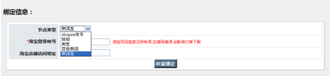 - 选择不同的节点类型，需要填写不同的第三方仓储信息。
- 添加仓储，只是将仓储的相关信息录入到系统中，并没有与仓储实际建立关系。通过绑定来完成这一步骤。
- 查看绑定关系
- 点击“查看绑定关系”，可以查看系统当前所有的绑定关系信息，如下图所示：
- 被申请的绑定信息需要在这里进行确认。
- 点击“解除绑定”，输入解绑原因，提交后可以解除与某第三方仓储的绑定关系。
- 点击“查看绑定关系”，可以查看系统当前所有的绑定关系信息，如下图所示：
仓库设置
仓库管理
根据不同的业务需求，为了更好的与第三方仓储进行仓库之间的对接，首先需要建立系统中仓库与第三方仓储仓库的对应关系。
依次点击“系统工具—仓库设置—仓库管理”，可以看到系统所有的仓库列表，如下图所示：
点击 “添加\编辑”按钮进入仓库信息设置界面，如下图所示：
仓库名称为仓库在系统中的中文名称，所有需要显示仓库的地方都会显示该名称。
仓库编号为仓库在系统中的唯一标示，在出入库事务中会用到，用来表示这个仓库。
仓库设置决定了仓库中货品是否具有可销售性，如正仓、售后仓、或残损仓
仓库属性决定了是否要回写前端库存，在回写前台库存时，线下仓库中商品的库存将不被统计。一般情况下可以将不用于电子商务销售的仓库，残仓等设置为线下。
仓库的辐射区域是指该仓库指定的配送区域，可以选择全国或指定地区，可精确到三级城市。操作员为订单选择发货仓库的时候系统会根据辐射区域的设置不同而有不同的默认仓库推荐。
仓库对应店铺决定了该店铺从哪个仓库发货。
第三方仓储选择决定了该仓库与哪个第三方仓储建立对应关系。
外部仓库设置
外部仓库为非系统仓库，在出入库时起到作用，如采购入库时的来源仓，退厂出库时的调入仓，通常为品牌商自己存放货物的仓库。依次点击“系统—仓库设置—外部仓库设置”，如下图所示：
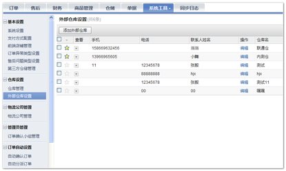
点击 “添加\编辑”按钮进入外部仓库信息设置界面，如下图所示：
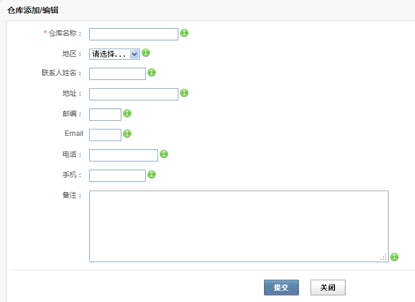
仓库名称为仓库在系统中的中文名称，已保存的仓库名称不可更改。
地区为仓库所在地区。
联系人姓名为仓库负责人姓名。
地址为仓库所在城市的详细地址。
邮编为仓库所在地的邮政编码。
Email为仓库的email。
电话为仓库的固定电话。
手机为仓库负责人的手机。
物流公司管理
物流公司管理
物流公司在货物配送过程中占有重要角色。系统提供了物流公司管理功能，大大提高了工作效率。
依次点击“系统工具—物流公司管理—物流公司管理”，如下图所示：
已经添加好的物流公司会显示在列表中。
点击“添加物流公司”或“编辑”按钮，进入物流公司配置界面，如下图所示：
- 基本信息
- 我们预设了一些常用物流公司的基本信息，可以点击进行选择。物流编号为物流公司的特定标识，前端系统以此来识别物流公司。
- 如果系统中没有找到使用的物流公司，也可以自己添加。
- 权重是由用户为物流公司定义的一个排序，权重越大排序越靠前。在自动确认选择物流公司时，如果多个物流公司满足条件，则会选择权重较高的那个。
- 我们预设了一些常用物流公司的基本信息，可以点击进行选择。物流编号为物流公司的特定标识，前端系统以此来识别物流公司。
管理员管理
订单确认小组管理
订单收订完成后，会进入订单调度、订单确认流程。系统为客户提供订单确认小组管理功能，对订单确认小组进行编辑、添加组，提高订单处理效率。
依次点击“系统工具—管理员管理—订单确认小组管理”，如下图所示：
已经存在的确认小组会显示在列表中。
点击“添加管理员组”或“编辑”，可以对订单小组进行设定，如下图所示：
一个管理员可以属于多个订单确认小组。
订单自动设置
自动确认订单
依次点击“系统工具—订单自动设置—自动确认订单”，如下图所示：
已经存在的自动确认规则会显示在列表中。
点击“新建”或“编辑”按钮，进入自动确认规则的编辑界面，如下图所示：
添加规则名称和描述，规则可以通过两个条件来限制对于哪些订单进行自动确认，缺省默认为所有。条件之间是并且的关系。
对符合条件的订单执行自动确认，当订单中的所有商品都可以从某个仓库发货时，你可以选择权重最高的仓库，或者收货地址的三级区域包含于仓库设置的地域之中的仓库；在选择物流公司的时候，会在配送范围覆盖了收货区域的物流公司中选择权重最高的。
可以针对不同条件的订单添加多条自动确认规则，规则与规则之间是或者的关系。
自动分派订单
依次点击“系统工具—订单自动设置—自动分派订单”，如下图所示：
已经存在的自动分派规则会显示在列表中。
点击“新建”或“编辑”按钮，进入自动分派规则的编辑界面，如下图所示：
添加规则名称和描述，规则可以通过两个条件来限制对于哪些订单进行自动分派，缺省默认为所有。条件之间是并且的关系。
对符合条件的订单执行自动分派，订单将会被分派到设定的订单确认员。如果确认员为空，表示将订单分派到这个确认小组。
可以针对不同条件的订单添加多条自动分派规则，规则与规则之间是或者的关系。
数据清除
清除数据
依次点击“系统工具—数据清除—清除数据”，只有超级管理员有权限清除数据，操作将清除系统中除绑定关系外的所有用户数据，操作不可逆。如下图所示：
OME队列
队列管理
针对系统在运行过程中，可能会出现需要执行的任务量巨大而排队的现象，系统提供了队列管理功能，可以对队列中的任务进行执行或删除操作。
依次点击“系统—OME队列—队列管理”，如图所示：
控制面板
地区管理
地区管理
客户在下单完成以后，可能由于某种原因需要更改收货地址。对此系统提供了基本的地区管理功能，方便操作员快速、精确的修改买家收货地址。
依次点击“控制面板—地区管理”，如下图所示：
点击“添加地区”或“编辑”，对业务中需要的地区进行添加或编辑
点击“添加子地区”，对业务需要的子地区进行添加
通过填写数字对地区的优先级排序，数字越小越靠前
点击“+”，可以展开三级区域
地区设置
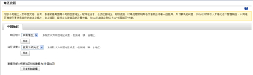
可以根据业务需求选择所需的地区区域（一级区域、二级区域、三级区域）
点击“恢复初始数据”，地区数据恢复为初始的中国地区
管理员和权限
角色管理
在订单日常运营过程中，有时会需要多个部门、多位管理人员协作操作，比如添加商品、处理订单等。使用角色与权限管理可以有效解决这个问题。
角色管理可以帮助您管理授权，允许您指定应用程序中的用户可以访问的资源。角色管理允许您向角色分配用户，并且可以通过将用户分配到组来创建角色。
依次点击“控制面板—管理员和权限—角色管理”，如下图所示：
点击查看按钮，可以看到角色拥有的权限
点击“新建角色”或“编辑”，进行角色的添加
填写相应的角色名称（必填），勾选相应角色，点击确定，完成角色新建。
操作员管理
通过设置不同的管理员，可以让您的运营协作更加规范、责任到人。
依次点击“控制面板—管理员和权限—操作员管理”，如下图所示：
系统安装时生成的管理员默认是超级管理员，只有一个，后来添加的管理员均为普通管理员。
添加管理员的前提是角色已经设置结束，如果没有角色，请先添加。 例如：添加一个商品管理员，该管理员具有与商品有关的所有权限。
对已有管理员信息可以重新编辑
点击修改密码，系统会弹出密码修改框
全局
列表页面
列表项配置
列表项配置中包含当前页面所有列表项，可以根据业务需求，选择开启或关闭某些列表项。
鼠标按住某个列表项并上下拖动，即可改变该列表项在页面中的显示顺序。拖动到越前端，列表项显示越靠前。
模糊搜索
系统提供基本的搜索功能，可以根据搜索名称进行搜索，该搜索为模糊搜索。
高级筛选
当用户需要对特定条件下的订单信息进行查看时，用户可以通过高级筛选功能，筛选出符合条件的订单。
点击筛选项设置下拉框，对筛选项进行勾选即可根据需求选择相应的筛选条件。默认情况下筛选项全部选中。
自定义页面标签
系统提供基本的自定义页面标签功能。通过设置标签，可以快速筛选出你需要的订单。

当你根据某个筛选条件，筛选出你所需的订单时，系统会显示“保存筛选条件”页面
点击“保存筛选条件”，为当前筛选条件命名并保存，系统会新增该功能标签，以便再次筛选
商品管理
商品管理
查看所有商品
依次点击“商品—商品管理—查看所有商品”，可以看到系统内所有商品的列表，点击字段名，可以按照该字段升序或降序排列，如下图所示：
可以点击“编辑”对已有商品进行编辑。

选择一个或多个商品，点击“删除”可以删除商品，我们规定，使用过的商品不可以删除。
选择一个或多个商品，点击“导出”可以导出商品信息。
如果有多个商品，点击“批量同步”可以对多个商品同时同步。
添加商品
点击“添加商品”，对新商品信息进行入录。如下图所示：
如有特定的商品类型以及商品品牌，需先新建并选择相应的商品类型以及商品品牌，之后可以在这里进行选择。
商品编号是商品的唯一标识信息，货号是货品的唯一标识信息，不能重复。一个商品可能对应多个货品。提交后货号不能修改。在系统中也有一些地方运用条形码来表示货品，没有强制限制条形码不能重复。
商品重量的输入可以方便系统计算预计的物流费用。
点击“开启规格”，可以创建带规格的商品。
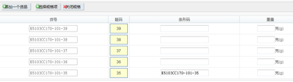
为商品开启规格后，商品货号消失，每个规格生成相应的货品货号。和商品一样，货品被使用过后，规格不能关闭。
商品配置
商品类型
商品类型指的是依据某一类商品的相同属性归纳成的属性集合，依次点击“商品—商品配置—商品类型”，如下图所示：
点击 “新建/编辑”对商品类型进行编辑与添加，如下图所示：
类型名称为必填；类型别名即对该类型的标识，使该类型更加细化，有关联品牌的可以选择关联品牌，点击“新增规格”，可以添加相应规格。这样在添加商品时，选择了该类型，品牌和规格的添加将会变得更便捷。
商品规格
所谓规格是依据顾客的购买习惯而独立出来的一种商品的特殊属性，例如顾客先选好了某一款衬衫，然后必须再选择颜色和尺码才可以订购，这里的颜色和尺码称为规格。
依次点击“商品—商品配置—商品规格”，如下图所示：
点击“编辑”“新建”对商品规格进行编辑与添加，如下图所示：
在规格名称中输入规格名称，规格别名可以用 | 分割，可以通过手动上下拖动更改规格值名称的顺序，点击最右侧的“×”，删除不需要的规格值名称，删除后需要重新添加。
选中一个或多个需要保存的规格，点击“导出”按钮，可以将规格信息导出，便于存档。
当需要添加大量的规格信息时，也可以通过导入的方式完成。可以在规格导出文件的基础上进行编辑，再导入系统。
商品品牌
品牌的管理也是商品信息中的重要部分，依次点击“商品—商品配置—商品品牌”，如下图所示：
点击“添加按钮”，对商品品牌进行添加。
在品牌名称中输入品牌名称，在排序中输入排序，排序越大，商品越靠前。网址为该品牌的官方网址。
点击查看下方的箭头，展开品牌信息，可以对已有品牌进行编辑。
选中一个或多个需要保存的品牌，点击“导出”按钮，可以将品牌信息导出，便于存档。
当需要添加大量的品牌信息时，也可以通过导入的方式完成。可以在规格导出文件的基础上进行编辑，再导入系统。
商品批量处理
批量上传
需要添加的商品数量较多时，可以选择批量上传的方式。依次点击“商品—商品批量处理—批量上传”，如下图所示：
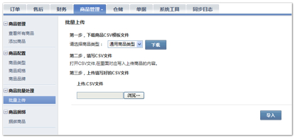
第一步，选择相应的商品类型，下载商品CVS模板文件，第二步，填写CVS文件，输入商品内容，第三步，上传填写好的CVS文件。商品信息即导入成功。
商品捆绑
捆绑商品
商品捆绑作为一种营销策略被广泛地应用于商品销售中。捆绑商品不计算库存。依次点击“商品—商品捆绑—捆绑商品”，如下图所示：
点击“捆绑/编辑”对捆绑商品进行添加或修改，如下图所示：
点击“捆绑”可以添加捆绑商品，捆绑商品种类可以为1，但数量最小为2。捆绑商品货号与商品货号一样，不可重复，不可修改。
选中一个或多个捆绑商品，点击“删除”进行对已有的捆绑商品的删除。
订单处理
订单查看
订单列表
订单收订是将不同前端店铺的订单进行收取。不同前端店铺收取相应订单的规则也不相同。对于Shopex体系的前端，系统收取所有状态的订单。对于淘宝、拍拍，系统收取所有已支付的订单和货到付款的订单。有过支付的在订单被收订的同时也会收订相应金额的付款单。
依次点击“订单—订单查看—订单列表”，如下图所示：
订单背景为红色表示在系统接收到该订单从前台发出的退款申请后，自动取消发货单并且失败的，会显示为红色，提示客服人员手动处理。
- 订单状态
每个订单会有确认状态、付款状态和发货状态。 确认状态分为：取消，未确认，已确认，部分拆分，已拆分完和余单撤销。
- 取消：订单已经失效。
- 部分拆分：订单中有部分货品未生成发货单。
- 已拆分完：订单中所有货品都已生成发货单。
- 余单撤销：订单中部分货品已发货，剩余部分货品由于某种原因不再需要发货，根据业务需求对其进行撤销。
- 付款状态分为：未支付，已支付，处理中，部分付款，部分退款，全额退款，退款申请中，退款中，支付中
- 退款中：部分退款和全额退款。
- 支付中：有同步中的付款请求。
- 部分付款：部分订单金额已支付，剩余部分由于某种原因未付款。
- 已支付：订单已支付金额=订单金额。
- 退款申请中：有未处理的退款申请。
- 退款中：有同步中的退款请求。
- 部分退款：部分订单金额已退款，剩余部分由于某种原因未退款。
- 全额退款：订单中所有金额全部退回。
- 发货状态分为：未发货，部分发货，已发货。
- 部分发货：已发货的货品数量少于订单中货品数量。
- 已发货：订单中所有货品都已发货。
- 订单详情
点击查看下方的箭头，展开订单，查看详细信息。包括订单的基本信息，订单明细，优惠方案，收退款记录，退款申请记录，发货记录，订单备注，订单附言，订单异常备注和订单操作记录，发货人信息，代销人信息
基本信息中会有相应的商品价格信息、订单其他信息（如配送方式、支付方式、商品重量等）、购买人信息、收货人信息等。点击“复制收款人信息”按钮，可以将收货人信息整合后复制到剪贴板，方便店主粘贴至目标位置，如：给顾客确认地址的邮件，聊天对话框等。
订单明细中包含商品明细和售后明细。商品明细中，包括货号、商品名称、规格、单位、价格、购买量、已发货量。普通商品和捆绑商品将分两个区块显示。
售后明细中记录退货商品明细，包括货号、商品名称、价格、数量
底色为灰色的商品表示被删除的，在订单中这个商品已经不存在了。
优惠方案中会记录相应的订单和商品的优惠方案，如购买商品满300减100，会员购买商品享有8折优惠等。与基本信息中的订单优惠金额和商品优惠金额相对应。

收退款记录中会记录相应的收款单据列表（支付开始时间、支付单下载时间、平台支付单号、支付金额、支付方式）和退款单据列表（退款开始时间、退款单下载时间、平台退款单号、退款金额、退款类型）。
退款申请记录该订单相应的退款申请详细信息，包括申请日期、申请单据编号、申请退款金额、已退款金额以及状态。
发货记录中会记录相应的发货单信息，包括建立日期、发货单号、合并单号（订单中）、物流单号、收件人、物流公司、发货仓库、重量和发货状态。发货状态中设有查询按钮，点击查询按钮，可以查询订单的发货状态。
订单备注是前端客服或者系统的订单确认员根据业务要求添加的备注。备注会采用追加的形式记录。
订单附言是买家在下单时的留言。
订单异常备注中记录了对订单进行异常操作时录入的一些信息。
订单操作记录即订单操作日志，记录相应的操作时间、操作人、操作行为和操作备注。
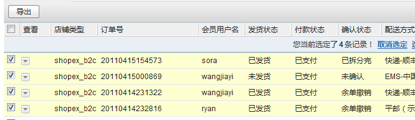
选中一个或多个订单，点击“导出”按钮，可以将选中的订单信息导出，方便与其他平台的销售信息进行核对和统计等。
订单调度
未分派的订单
系统将首先按照预制的规则自动分派订单，不能自动分派的订单需要调度员手工分派。依次点击“订单—订单调度—未分派的订单”，如下图所示：
所有未取消并且未被分派的订单都会出现在未分派订单列表中。选择一个或多个订单，点击“订单分派”按钮，对未分派订单进行分派，系统出现订单分派界面，选择相应的订单确认小组和确认员。确认员为空时表示将该这些订单分派到这个小组。属于该小组的确认员可以自由领取订单进行处理，如下图所示：
已分派的订单
已分派的订单也可以再次被分派，重新分派后，将覆盖上一次的分派信息，确认组、确认人字段内容会随之改变。操作同“未分派订单”的分派。
订单处理
订单经过分派后，进入订单处理流程。订单的处理流程主要有订单的领取、订单确认、订单拆分、订单编辑等。
我的待处理订单
已分派并且分派到这个操作员的，没有处于异常状态的，并且需要处理的订单，都会出现在“我的待处理订单”列表中。在“我的待处理订单”列表中，可以进行失效时间编辑、订单确认、订单拆分、余单撤销、订单异常、暂停、编辑、退款申请等操作。依次点击“订单—订单处理—我的待处理订单”，如下图所示；
- 取消
- 对于未发货的订单，都可以进行取消操作。点击“订单取消”按钮，出现取消订单备注的窗口，如下图所示：
- 录入取消理由并提交，系统将会取消订单。
- 对于未发货的订单，都可以进行取消操作。点击“订单取消”按钮，出现取消订单备注的窗口，如下图所示：
- 失效时间编辑
- 对于未支付的款到发货订单，在系统设置的失效时间过后，订单将被自动取消。遇到特殊情况，可以通过编辑失效时间，来单独对某个订单进行调整。点击日期，选择新的失效时间，再点击“失效时间编辑”按钮进行提交。届时，订单若仍然为未支付，将被系统自动取消。
- 订单确认/拆分
- 已支付的款到发货订单和经过货到付款的订单，都可以进行订单确认操作。点击“订单确认”，进入订单确认界面，如下图所示：
- 右上角提供了可以含有这个商品的仓库和当前可拆分库存值（库存-仓库冻结库存），首先选择满足订单发货条件的仓库，再选择物流公司。此时点击“确认并生成发货单”，即完成了订单确认和订单拆分。这个动作也可以由两位操作员完成，一个负责对订单有效性的确认，一个负责拆分订单商品生成发货单。如果一个订单存在多个商品的话，勾选“是否合并发货单”，可以对多张发货单进行合并。
- 当鼠标移至仓库名称上方时，会显示相应的仓库联系人、联系电话、手机信息；点击“更多”或向上箭头可以完成信息的展开或收起
- 库存说明：粉色为库存紧张、淡绿色为库存充足、灰色为缺货
- 点击“使用其他配送信息”，系统页面显示为：
- 修改文本框中信息并确定，系统保存修改后的配送信息
- 已支付的款到发货订单和经过货到付款的订单，都可以进行订单确认操作。点击“订单确认”，进入订单确认界面，如下图所示：
- 余单撤销
- 对于部分发货的订单，未发货的商品确认不要需要发货时，可以进行余单撤销操作。点击“余单撤销”，进入相关操作界面，如下图所以：
- 列表中显示了订单中的所有商品，撤销金额为“-”的表示该商品已发货，无法撤销。订单的各种优惠金额都显示在商品列表的下方，由于各种促销优惠的影响，需要退款的金额不一定等于撤销商品的金额，在退款金额处录入确认要退款的金额后，点击确认并退款，出现退款申请界面。
- 填写退款申请并提交，等待财务确认退款。
- 此时订单的确认状态就变成了“余单撤销”，发货状态变成了“已发货”。
- 对于部分发货的订单，未发货的商品确认不要需要发货时，可以进行余单撤销操作。点击“余单撤销”，进入相关操作界面，如下图所以：
- 订单异常

- 当订单在处理过程中遇到问题时，可以先将该订单设置为异常。展开订单详情，点击“订单异常”按钮，进入异常设置界面。
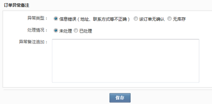 - 选择异常类型和处理情况，填写备注并提交。未处理的异常订单将在订单确认菜单中消失，统一收录在异常订单菜单中，便于集中处理特殊情况。已处理的异常订单，将恢复初始状态，需要重新进行分派和确认操作，分派过的已处理异常订单可以不用再次分派，仍由上次订单的确认员继续订单确认工作。
- 当订单在处理过程中遇到问题时，可以先将该订单设置为异常。展开订单详情，点击“订单异常”按钮，进入异常设置界面。
- 暂停
- 当订单在处理过程中遇到问题时，也可以先将该订单暂停，此时已生成的发货单将无法被操作。展开订单详情，点击“暂停”按钮，即可将订单调为暂停。在暂停的情况下，点击“恢复”按钮，可以恢复订单。
- 编辑
- 必须先暂停订单，才能对其进行编辑。点击“编辑”按钮进入订单编辑界面，如下图所示：
- 可以添加和删除商品，修改收货人信息，对整张订单的价格进行调整。编辑完成后点击确认，系统会自动恢复订单。此时，订单的总金额等于已支付金额时，可以继续进行订单确认操作。如果不等于，则会发起退款申请或者提示需要买家补交余额。
- 订单编辑后，因为订单的内容发生变化，已经生成的发货单都会被自动取消，需要重新进行订单确认和拆分操作。
- 必须先暂停订单，才能对其进行编辑。点击“编辑”按钮进入订单编辑界面，如下图所示：
我的已处理订单
已分派并且分派到这个操作员的，没有处于异常状态的，并且已经处理完成的订单，都会出现在“我的已处理订单”列表中。在“我的已处理订单”列表中，可以进行退款申请，暂停，编辑，订单异常等操作。依次点击“订单—订单处理—我的已处理订单”，如下图所示：
操作同“我的未处理订单”中的操作。
本组的订单
已分派到这个订单确认小组的，没有处于异常状态的订单都会出现在“本组订单”列表中。在“本组订单”列表中，属于这个小组的确认员可以对只分派组而没有分派到具体确认员的订单进行领取操作。依次点击“订单—订单处理—本组的订单”，如下图所示：

- 领取
- 点击“领取”，确认领用后，即可将该订单领取到自己的待处理订单中进行处理。
异常订单
异常订单
所有未处理的异常订单都会收录在“异常订单”列表中，除了不能进行订单确认和拆分，其余操作同订单确认菜单下，依次点击“订单—异常订单—异常订单”，如下图所示：
失败订单
当系统收订的订单中，有商品的货号在系统中无法匹配时，系统就无法识别订单中到底购买了哪些商品，这些订单都会被收录在在“失败订单”列表下。在“失败订单”中，可以对无法匹配的商品货号进行调整。依次点击“订单—异常订单—失败订单”，如下图所示：
- 调整货号
- 点击“查看”下方的下拉箭头，将要调整的货号填写在文本框内。点击“修改提交”，即可将该订单恢复到正常的订单列表中。
- 点击“批量修改提交”，即对失败订单中所有无法与系统货号匹配的商品做统一的调整。批量修改后，依然有无法匹配商品的订单仍会留在“失败订单”列表中。
新建订单
客服可以根据业务需要，随时新建订单，新建时可直接调用已有的会员信息，也可以新添加会员。
淘宝拍拍订单
待处理的退款订单
系统接收到前台的退款申请后，会自动取消订单，取消失败的订单会被标红，所有标红的订单都会出现在待处理的退款订单列表中，方便操作员集中处理。依次点击“淘宝拍拍订单—待处理的退款订单”，如下图所示：
客服点击“已处理”，系统会弹出提示框
点击确认按钮，该订单将从当前列表消失，对应的被标红订单不再显示为红色。
财务
订单财务
订单财务部分包括“付款确认”、“退款确认”
付款确认
依次点击“财务—订单财务—付款确认”，需要付款的订单会出现在付款确认列表中，如下图所示：展开某个订单后，可对其进行付款确认操作：
支付方式是必填的。
一般情况下是不需要做付款确认的，当买家通过系统外的其他方式，支付了订单时，可以通过付款确认的操作，在系统对订单的支付信息做一个记录。
退款确认
依次点击“财务—订单财务—退款确认”，可以看到所有的退款申请都会收录在这里。如下图所示：
退款申请的状态分为“未审核”，“审核中”，“已接受申请”，“已退款”和“已拒绝”。初始状态为“未审核”。展开退款申请可以查看详情，并且决定是否接受该申请。

接受申请之后，便可以执行退款确认的操作。点击“退款”按钮，填写相应的退款信息，完成退款确认。
售后
当商品出售以后，客户如果对商品不满意，可以提出售后请求，选择退货是更换货。
所有售后
所有售后
客户提出的所有售后都会收订在所有售后订单列表中。依次点击“售后—所有售后”，如下图所示：
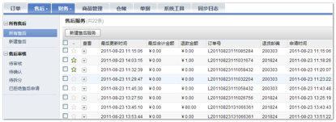
- 每个售后订单都会有状态，状态反应了售后订单的处理阶段。
售后状态主要有：申请中、审核中、接受申请、完成、拒绝、已收货、已质检、已拒绝退款、已取消、待入库、待拆分。
- 申请中：有同步的售后申请
- 审核中：有同步的审核请求
- 接受申请：申请完成，待审核
- 完成：退换货流程完成并生成退/换货入库单和负销售单，换货生成换货订单、退货生成退款单
- 拒绝：售后申请被驳回
- 已收货：售后订单审核后，仓库接收买家退回的商品
- 已质检：仓库接收到退换货商品后对商品进行质量检测
- 已拒绝退款：根据不同公司的业务规定，可以对产品包装盒与配件不完整的商品拒绝退款
- 已取消：由于客户原因或其他原因，提出撤销售后申请，则售后订单被取消
- 待入库：质检完成等待仓库人员对商品进行入库
- 待拆分：换货售后申请完成后，会生成相应的换货订单等待重新拆分。
- 售后订单详情
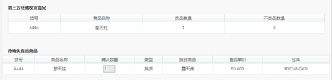
- 点击查看，展开售后详情
- 详情包括售后标题信息、申请售后服务商品信息（包括货号、商品名称、申请数量、剩余数量、类型、售后价格、换货商品、所属仓库）、发货人信息（包括姓名、电话、手机、地区、地址、邮编）、第三方仓储收货情况（货号、商品名称、良品数量、不良品数量）、待确认售后商品（货号、商品名称、确认数量、类型、换货商品、售后单价、仓库）操作日志（操作时间、操作员、操作类型、操作内容）申请中的售后订单，客服可以更改退款金额、售后单价等信息。如果一个订单中包含多个商品并且含有订单优惠或折扣，在对订单中某个商品进行退货时，退款金额不一定等于商品单价，这个时候客服可以根据不同的业务规定修改申请数量、售后单价、退款信息等。
- 详情包括售后标题信息、申请售后服务商品信息（包括货号、商品名称、申请数量、剩余数量、类型、售后价格、换货商品、所属仓库）、发货人信息（包括姓名、电话、手机、地区、地址、邮编）、第三方仓储收货情况（货号、商品名称、良品数量、不良品数量）、待确认售后商品（货号、商品名称、确认数量、类型、换货商品、售后单价、仓库）操作日志（操作时间、操作员、操作类型、操作内容）申请中的售后订单，客服可以更改退款金额、售后单价等信息。如果一个订单中包含多个商品并且含有订单优惠或折扣，在对订单中某个商品进行退货时，退款金额不一定等于商品单价，这个时候客服可以根据不同的业务规定修改申请数量、售后单价、退款信息等。
- 点击查看，展开售后详情
新建售后申请
所有已发货的订单都可以发起售后申请，未发货、部分发货或全部退货的订单无法申请售后。
点击“售后—所有售后—新建售后”或所有售后列表中的“新建售后服务”，对售后订单进行创建
系统查询到订单，操作员点击申请按钮，系统弹出售后申请框
勾选发货单号，填写相应售后信息（服务标题和商品为必填项），点击“售后申请”，该售后订单会出现在所有售后列表中，订单状态为申请中，等待审核人员审核。
售后审核
待审核
售后订单创建后，需要操作人员对售后订单进行审核，操作员可以根据不同公司的业务规定选择接受售后申请或拒绝。
依次点击“售后—售后审核—待审核”，如下图所示：
点击查看按钮，展开待审核订单详情
售后审核人员对申请中的订单审核完成后，根据审核的结果选择接受申请或是拒绝。
如果选择接受申请，该订单状态由申请中变成待入库，并且订单从待审核列表中消失，可以在所有售后列表中查询到该订单信息。
如果选择拒绝，该订单状态由申请中变成拒绝，并且订单从待审核列表中消失，可以在已拒绝售后申请中查询到该订单信息。
待确认
客服接受售后申请后，系统会生成相应的退货单并且发送给第三方仓储进行收货作业，当第三方仓储返回已收货信息时，客服可以在待确认订单列表中找到该售后订单信息，并进行售后信息确认。
依次点击“售后—售后审核—待确认”，如下图所示：
点击查看，展开订单详情，进行订单确认
客服确认售后订单信息，点击确认提交。
系统保存提交信息，订单状态更改为完成。
待拆分
所有换货的售后订单会收订在待拆分列表中。提示客服去处理换货产生的新订单。
已拒绝售后申请
所有订单状态为拒绝的订单收订在已拒绝售后申请列表里。
依次点击“售后—售后审核—已拒绝售后申请”，如下图所示：
点击查看，可以看到订单售后详情
仓储
仓储管理就是对仓库内的物资所进行的管理，是仓储机构为了充分利用所具有的仓储资源提供高效的仓储服务所进行的计划、组织、控制和协调过程。
库存总览
库存是企业生产经营中存在的重要问题。
如果库存量过大，流动资金占用量过多，就会影响企业的经济效益；库存量过小，又难以保证经营持续正常进行。因此，库存量的多少必须掌握适度定额和合理库存周转量。依次点击“仓储—库存—库存总览”，如下图所示：

库存查询
为了方便用户对库存数量的跟踪，系统会对货品数量、库存总计进行实时统计
依次点击“仓储—库存—库存查询”，如下图所示：
点击列表项可以按照相关字段进行升序或降序排列。
系统中所有货品的库存都显示在列表中，库存是指这个货品在系统中所有仓库库存的和。
当需要对某个货品库存进行查询时，可以在搜索框中输入相应的货号或货品名称进行搜索；如果要对具体某个仓库中该货品的库存进行查询，可以点击高级搜索，选择仓库、货号或货品名称进行搜索。
列表中的冻结库存是指在系统所有的已生成发货单但未发货的订单中，共需要这个货品多少个，可用库存为实际可以使用的库存应=所有库存-冻结库存
点击生成报表，可以导出实时的所有库存信息，以便用户库存对账或他用。

库存异动查询
系统提供库存异动查询功能，方便用户查询某个时间段内货品的所有出入库和库存动态。
依次点击“仓储—库存—库存异动查询”，如下图所示：

点击生成报表，可以对所有货品库存异动情况进行存档或留作他用。
- 查询某个时间段内所有货品库存状态：
- 选择查询时间，点击“确定”
- 系统提供基本的时间段查询，如昨日、今日、本周、上周、本月、上月，用户也可根据需求选择所需时间段，点击时间选择控件

- 选择查询时间，点击“确定”
- 查询某个时间段内某个货品的库存状态：
- 第一步，选择时间，同上述
- 第二步，输入货品货号，点击搜索即可，也可通过高级筛选进行精确筛选
- 货品出入库详情查看：
- 点击查看，展开库存详情
- 系统将所有出入库类型为出库的订单背景标示为蓝色，出入库类型为入库的标示为灰色。
- 点击查看，展开库存详情
入库事务
商品入库即把商品放入仓库储存的过程，一般分为采购入库、退换货入库、调拨入库。
入库单查询
商品入库时，系统会记录相应的入库单信息，以便用户查询。
依次点击“仓储—入库事务—入库单查询”，如下图所示：

入库事务会记录相应的订单状态，有单据状态、确认状态。
- 单据状态：全部入库、部分入库、未入库
- 全部入库：仓库完成入库作业
- 未入库：仓库未开始入库作业
- 确认状态：已确认、无需确认、未确认
- 未确认：实际入库信息与入库单信息有差异（良品数量不等于预计入库数量）等待操作员确认
- 已确认：操作员按照实际入库信息确认入库单
- 无需确认：实际入库信息与入库单信息没有差异且良品数量等于预计入库数量
- 点击查看，展开入库单详情查看

- 对未入库且无需确认的入库单可以取消
- 点击取消按钮，系统显示入库单取消界面
- 点击确定，系统更改入库单状态为取消、无需确认
批量入库单添加
系统提供入库单添加功能，用户可以根据需求选择新建或导入入库单。
- 新建入库单步骤
- 点击“新建入库单”，如下图所示：
- 点击“新建入库单”，如下图所示：
- 填写入库单信息，选择入库类型（采购入库、调拨入库、残损入库）
- 添加商品
- 勾选一个或多个商品，点击确定按钮
- 确认需要入库商品
- 填写经办人姓名、备注（经办人姓名为必填），点击确认提交。
完成新建的订单可以在入库单查询中找到，相应货品仓库库存值改变。
- 导入入库单步骤
- 导出入库单模板
*货号 *名称 *数量 *价格 *调出仓库 *调入仓库 *入库类型 xx yy - 填写入库单信息
- 货号和数量必须与调出仓库中的实际情况相符合，价格仅作记录。
- 如果一次导入多个货品，调出仓库、调入仓库、入库类型数据必须一致
- 导出入库单模板
- 导入填写好的入库单
- 导入后的入库单可以在入库单查询中找到，相应货品仓库库存值改变。
确认入库单
当实际入库与入库单中信息存在差异时，可以手动对存在差异入库单进行确认。
所有未确认的存在差异的入库单会收订在确认入库单列表中，依次点击“仓储—入库事务—确认入库单”，如下图所示：
每个未确认的入库单都会记录相应的操作状态：确认
确认：未确认且实际入库与入库单存在差异的入库单需要手动确认
- 确认入库单
- 点击确认按钮，系统显示确认界面
- 系统提示“入库数量有差异，是否按实际数量确认入库单”
- 点击确认，系统更改订单状态为已确认、已入库，并且按照实际入库数量生成出入库单，并更该库存
- 点击确认按钮，系统显示确认界面
出库事务
商品出库即仓库根据按其所列商品编号、名称、规格、型号、数量等项目，组织商品出库一系列工作的总称，一般分为销售出库，损坏出库和外借出库等。
出库单查询
商品出库时，系统会记录相应的出库单信息，以便用户查询。
依次点击“仓储—出库事务—出库单查询”，如下图所示：
出库事务会记录相应的订单状态，有单据状态、确认状态。
- 单据状态：全部出库、部分出库、未出库
- 全部出库：仓库完成出库作业
- 未出库：仓库未开始出库作业
- 确认状态：已确认、无需确认、未确认
- 未确认：实际出库信息与出库单信息有差异（良品数量不等于预计出库数量）等待操作员确认
- 已确认：操作员按照实际出库信息确认出库单
- 无需确认：实际出库信息与出库单信息没有差异且良品数量等于预计出库数量点击查看，展开出入单详情查看
- 对未出库且无需确认的出库单可以取消，操作同取消入库单
批量出库单添加
同入库单添加步骤。出库单导出模板：
| *货号 | *名称 | *数量 | *价格 | *出库仓库 | *调入仓库 | *出库类型 |
|---|---|---|---|---|---|---|
| xx | ||||||
| yy |
如果一次导入多个货品，出库仓库、调入仓库、出库类型数据必须一致
确认出库单
当实际出库与出库单中信息存在差异时，可以手动对存在差异出库单进行确认。
所有未确认的存在差异的出库单会收订在确认出库单列表中，依次点击“仓储—出库事务—确认出库单”，如下图所示：
确认步骤同入库单的确认，出库单确认完成后，系统会释放原先占用的库存，并且按照实际出库数量生成出库单，相应的出库状态为已出库、确认状态为已确认。
其他事务
调账
通过调账功能可以人为的改变库存数。
依次点击“仓储—其他事务—调账”，如下图所示：
- 单个调账
- 选择查询类型：可以通过对货号或货品名称进行搜索
- 填写货品信息，并搜索
- 填写调整数量，并确认
- 确认完成的订单，系统将更新库存，调整后的库存作为实际库存。
- 选择查询类型：可以通过对货号或货品名称进行搜索
- 批量导入调账
- 下载调账CSV模板文件, 仓库填编号，一张表格只能有一个仓库
*:货号 *:名称 *:仓库 *调整到的数量 xx yy - 填写CSV文件
- 导入CSV文件
- 下载调账CSV模板文件, 仓库填编号，一张表格只能有一个仓库
盘点申请
第三方仓储对仓库进行盘点后，生成的盘点单或盘点流水都会收录在盘点申请列表中。
依次点击“仓储—其他事务—盘点申请”，如下图所示：
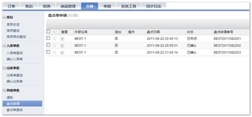
点击查看，展开流水单详情
盘点差异类型：盘亏、盘盈
盘亏：仓库实际库存<第三方仓储系统中库存
盘盈：仓库实际库存>第三方仓储系统中库存
- 确认盘点结果（只有未确认的盘点流水单才会出现确认\关闭按钮）
- 点击确认按钮，系统显示确认界面
- 确认盘点结果, 在确认盘点结果时可以采用指定盘点仓库或导入盘点明细的方法
- 指定盘点仓库
- 选择货品所在仓库，点击确认。系统会按照盘点确认结果生成相应的盘亏盘盈出入库单，并且根据盘点确认结果更新库存。生成的出入库类型为盘亏、盘盈。
- 指定盘点仓库
- 点击确认按钮，系统显示确认界面
- 导入盘点明细
- 第一步：下载盘点明细
- 第二步：调整盘点结果
- 第三步：上传CSV文件
- 点击确认，系统会按照盘点确认结果生成相应的盘亏盘盈出入库单和盘点单，并且根据盘点确认结果更新库存。生成的出入库类型为盘亏、盘盈。
- 第一步：下载盘点明细
- 关闭盘点结果（只有未确认的盘点流水单才会出现确认\关闭按钮）
- 根据某些业务需求需要关闭盘点结果时，可以点击“关闭”按钮
- 点击确定，系统将关闭该盘点流水单，单据状态更改为已关闭。取消则对该单据不做任何操作。
- 根据某些业务需求需要关闭盘点结果时，可以点击“关闭”按钮
盘点单查询
由盘点确认生成的盘点单可以在盘点单查询列表中查询到结果。依次点击“仓储—其他事务—盘点单查询”，如下图所示：
点击查看，展开盘点单详情
单据
订单单据
付款单管理
订单的每一笔支付都会产生一张付款单，所有的付款单都收录在这里。对一张订单分开几次支付，就会产生多张付款单。
选中一张或多张付款点击“导出”按钮可以将相关的单据导出存档或做他用。
退款单管理
同样的，订单的每一笔退款都会产生一张退款单，所有的付款单都收录在这里。每确认退款的一张退款申请都会产生一张退款单。
选中一张或多张退款单，点击“导出”按钮可以将相关的单据导出存档或做他用。
账务单据查询
销售单查询
当订单发生出入库事务后，系统会根据订单的相关信息生成销售单。销售单记录了销售金额，物流费，订单折扣金额、销售数量、出入库单号、退发货单号等数据，销售单可以用来做销售帐。系统提供基本的销售单查询功能。
如果一张订单被拆成两张或以上的发货单，那么订单相关的运费，促销等信息将会在第一张发货单发货时被记录，之后的发货单再发货时相关数据就不在被统计了。
当执行了退货入库和换货入库的操作时，系统会根据相关数据自动生成负销售单。
选中一张或多张销售单，点击“导出”按钮可以将相关的单据导出存档或做他用。
出入库查询
当对商品进行出入库操作后，系统会生成出入库单。出入库单记录出入库数量和价格，可以用来做库存帐。系统提供基本的出入库单查询功能。
选中一张或多张出入库单，点击“导出”按钮可以将相关的单据导出存档或做他用。
数据统计
销售统计
系统提供销售统计报表，方便对订单数、出库单数、退换货单数、销售总计、销售额、负销售额的查看，提高企业效益。
操作员可以根据搜索条件，精确到对某个月、某个仓库销售数据的查看
物流结算单据
系统自动统计了每一张发货单产生的物流费用，提供了统计和相关报表，方便商家与物流公司之间的费用结算。
物流结算单据分为款到发货和货到付款两种，款到发货结算单据上只对快递总费用进行结算。货到付款结算单据上需要对快递总费用和代收订单应收款总费用进行结算。
款到发货
依次点击“单据—物流结算单据—款到发货”，如下图所示：
系统提供基本的时间段查询，如昨日、今日、本周、上周、本月、上月，用户也可根据需求选择所需时间段，点击时间选择控件
注：数据非及时显示，当天数据请于第二天查看
点击生成报表，可以对数据存档留作他用
货到付款
依次点击“单据—物流结算单据—货到付款”，如下图所示：
同步日志
所有系统发起的请求和失败的响应的动作都会在这里记录日志，日志在API同步日志备份周期时间过后会自动删除。
对于失败的请求，系统会按照一定的时间规则自动重试3次，仍然失败的请求可以手动发起重试请求。展开日志，在返回中可以看到失败的原因，如下图所示：
这里需要注意的是，重试只是将当前的同步信息再一次发送，如果返回的失败原因是数据填写的不正确，即使修改了数据也是没有作用的。对于库存回写的失败，不要盲目的进行重试，只要这个货品的库存值发生了变化，五分钟内会再次发起回写的，若此时库存已经改变，因为网络超时原因一小时前失败的请求被重试成功后，相关货品在前端的库存值就不正确了。
任务日志
系统根据不同的任务名称设定了相应的日志管理，主要有交易信息同步、发货信息同步、支付信息同步、退款信息同步、售后信息同步、退货信息同步、商品信息同步、入库信息同步、出库信息同步、盘点信息同步、库存信息同步。
对系统发起失败的请求，可以在此进行批量重试
对某个发起失败信息进行重试，可以根据不同的搜索条件进行搜索
行为日志
行为日志中记录了详细的事务处理过程，方便客户对事务处理各个步骤的查看。另外系统将行为日志分为几个板块，主要有交易行为、发货行为、支付行为、退款行为、售后行为、退货行为、入库行为、出库行为、盘点行为。客户可以根据不同的业务流程选择不同的行为进行查看。点击查看，可以展开详情查看